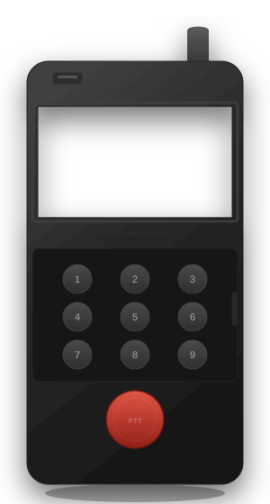
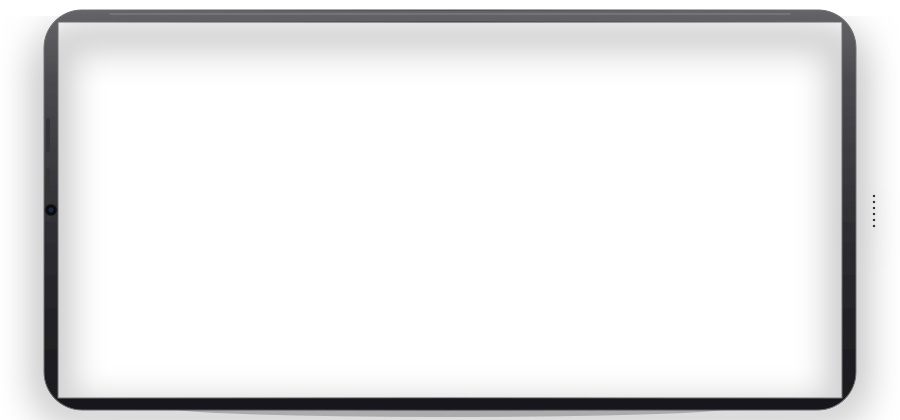

.png)
.png)
.png)
.png)
.png)
.png)
.png)
.png)

抖音：小闫连不上叮咚鸡（Dondji）
适用于泉盛uvk1、uvk6 v3版本的一款固件。
刷机网址：https://ethanyan6.github.io/Dondji/
项目概述
叮咚鸡是第一款真正意义的全中文固件（有中文输入法，可手置频可网页写频），同时支持中英文切换。因为其漂亮的页面、简易的刷机流程、友好便捷的操作，深受广大Ham喜爱，被国内外很多博主所推荐。也被很多商家做为一大亮点，出售前刷为此系统。
核心特性
- 主页有两种风格，一种是摩托罗拉R7风格，一种是双守的风格。
- 设置菜单改为传统手机那种图标风格的样式。
- 频谱可以设置为简单，也可以设置为专业模式，显示瀑布图。
- 可以发射MDC1200协议的id。
- 可以发射Yan ID，与山竹、小甜水等固件互通。
- 有完整的中文字库，以及拼音输入法。可以手置频也可以网页写频。
- 有cw练习器、有收音机。
- 可以切换中英文两种语言。
- 自定义开机画面。
- 无校准也能进入系统，不会卡死。
- 丝滑恢复原厂，不会出现写频要密码的情况。
山竹（Mangosteen）
适用于泉盛uvk1、uvk6 v3版本的一款固件。
刷机网址：https://ethanyan6.github.io/Mangosteen/
项目概述
- 主页卡片式UI，有卡片切换动画。
- 中英文两种语言，可以自由切换。
- 完整的拼音输入法，可手置频、网页写频。
- 取消收音机页面，添加 WFM 调制模式，可以在主页输入64-108频率，系统自动切换芯片收听收音机，还可以命名并保存下来。
- 集成短信功能，可以收发短信，支持中文短信发射接收。
- 短信添加保存草稿，删除草稿的功能。
- 无游戏，f+7进入探测页面，可以探测附近功能开启的设备。
- 可以发射Yan ID，与叮咚鸡、小甜水等固件互通。
- 有频谱
小甜水（Syrup）
适用于泉盛uvk1、uvk6 v3版本的一款固件。
刷机网址：https://ethanyan6.github.io/Syrup/
项目概述
- 可切换中英文两种语言，有中文输入法，可手置频可网页写频。
- 有频谱。
- 有收音机，收音机页面有音乐频谱EQ图，很带感。
- 有cw练习器。
- 自定义开机画面。网页可以直接上传图片，系统自动缩放转换为黑白效果图片。
- 自定义开机提示语。
- 自定义开机音乐。网页可以直接上传mp3音乐，系统自动转换上传。
- 飞机雷达探测。
- APRS探测。
- 除自带尾音外，添加三种个性尾音，包含电话挂断音和汽车钥匙关闭音。
- 可以发射Yan ID，与山竹、叮咚鸡等固件互通。
- 双PPT功能。
- 三守，三PTT功能。
- 双守下，主页接收和发射有特殊动画。
- 网站添加素材下载，快速设置对讲机。
游戏固件（Game）
1.2.1适用于泉盛uvk1、uvk6 v3版本的一款固件。
刷机网址：https://ethanyan6.github.io/uv-k1-k5-v3-game-web/
项目概述
游戏固件是一款专门玩游戏的固件，其中包含 3 款游戏，3 款工具。分别为俄罗斯方块、贪吃蛇、电子木鱼、计算器、cw练习器、电子书。所有代码均为原创，全网独一份。
核心特性
- 俄罗斯方块：经典砖块游戏，记录分数，大家可以看看谁的分数高。
- 贪吃蛇：经典贪吃蛇，无数人童年的回忆，功能机时代的内置功能，也可以记录分数，互相比较。
- 计算器：支持加减乘除计算，上次计算结果仍可参与计算。
- 电子书：网页上传电子书，手台可进行翻阅，显示页数，会保存并显示进度，下次继续阅读。
- cw练习器：通过按键，系统自动识别输入的字母或数字，对于初学者记忆有好处。
- 电子木鱼：闲暇时敲敲木鱼增加功德。
多固件引导
0.1.28适用于泉盛uvk1、uvk6 v3版本的一个多固件刷机工具，替换原开机引导。
刷机网址：https://ethanyan6.github.io/uv-k1-k6v3-multi-system-web/
项目概述
可以让你的一台机器，同时拥有3个固件，完美适配BD1AHN开发的所有固件。
核心特性
- 多固件并存。
- 漂亮的多系统选择页面，有加载进度动画。
- 操作简单。侧键选择系统，PTT确认。
- 网页刷机简单，usb-c线即可刷机。

FMO副屏（fmo-show）
1.4为FMO开发的一款便携式查看和操作FMO的系统，还原FMO原始UI，简洁美观。目前有网页版、安卓软件、电脑软件。
https://ethanyan6.github.io/fmo-show/
项目概述
网页版有黑白和彩色两种，黑白专门为墨水屏设计，彩色还原FMO设计风格。除苹果设备外，其它所有支持浏览器的设备均可连接FMO，让万物互联，任何设备都可以变为FMO副屏。
设计理念
- 连接FMO后，让任何设备都可以变为FMO副屏。
- 还原FMO风格，页面简洁。
- 最重要的是：要漂亮！漂亮！还是TM的漂亮！
功能亮点
- 漂亮的页面 — 简洁、还原FMO设计
- 多设备支持 — 除苹果设备外，其它所有支持浏览器的设备均可连接FMO
- 显示通联次数 — 每个友台呼入后，右上角都会显示与其通联的次数，如果没有，就显示为“新”
- 元素丰富 - 个人信息、通联日志、服务器列表、对方呼号和通联次数、对方信息等等。
自驾游仪表盘（dagojo）
为喜爱自驾游或者徒步的爱好者们开发的一款浏览器访问的仪表盘。
https://ethanyan6.github.io/dagojo/
项目概述
只要是支持浏览器，有GPS和陀螺仪的设备都可以访问。最佳体验设备iPhone13。页面显示方位角、海拔、GPS位置信息、里程、计时、日期时间、日出日落时间。
功能亮点
- 漂亮的页面 — 简洁、科幻、夜晚超清晰。
- 多设备支持 — 所有支持浏览器、GPS和陀螺仪的设备均可使用。
- 显示内容多 - 方位角、海拔、GPS位置信息、里程、计时、日期时间、日出日落时间，包含自驾游关注的重要信息。
旅行手账（hand_drawn_map）
为喜爱自驾游或者徒步的爱好者们开发的一款浏览器访问的旅行手账。
https://ethanyan6.github.io/hand_drawn_map/
项目概述
只要是支持浏览器的设备都可以访问。输入地点后，系统自动查询路线，生成手绘风格的路线图，既可以做为出发前规划路线的工具，又可以做为旅行完后想要记录的工具。
功能亮点
- 全自动 — 只需输入地名即可自动生成手绘风格的路线地图。
- 多设备支持 — 所有支持浏览器的设备均可使用。
- 里程计算 - 两点之间里程标注，导出时，自动汇总计算总里程。
- 备注 - 每个地点所经历的事情可以记录，也可以上传这个地方的照片。
- 导出为明信片 - 可输入标题，旅行起始返程日期，还可以签名（支持输入或手签）最后导出为一份精美的明信片。